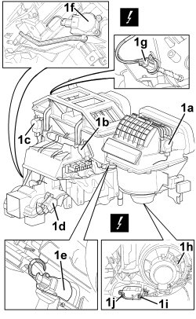

5040D80 AIR CONDITIONING SYSTEM CABLE LOOM - R.R. OR REPLACE
- Path
- Procedures > 50 AUXILIARY UNITS > 5040 AIR CONDITIONING CASING AND COMPONENTS > 5040D AIR CONDITIONING CONTROLS > 5040D80 AIR CONDITIONING SYSTEM CABLE LOOM - R.R. OR REPLACE
- Kind
- repair procedure (removal / refitting; the operation number is the code)
- Applies to
- all engines; all production periods
- Interactive page
- https://sloeber94.github.io/elrnDB-aBrrSpdr/en/#/946002287
Applies to: all engines; all production periods
 Removing
Removing
 Refitting
Refitting- Drain the coolant.
Op. 0010T84 COOLANT FOR AIR CONDITIONING SYSTEM - DEHYDRATE AND REPRESSURIZE
- Remove both the front doors.
Op. 7210E36 R.R. FRONT SIDE DOOR
Work on the left and right sides.
Op. 7040A04 DASHBOARD LOWER TRIM - R.R.
Op. 7040A65 CONSOLE SIDE CLOSING (ONE) - R.R.
Op. 7040G20 BULB HOLDER FOR COMPARTMENT LIGHTING IN DASHBOARD - R.R.
Op. 7040A31 DASHBOARD COMPARTMENT ASSEMBLY - R.R.
Op. 7040A26 STEERING COLUMN TRIM - R+R
Op. 5580C18 AIR BAG MODULE - R+R
Op. 4110A10 STEERING WHEEL - R+R FOR REPLACEMENT OR CHECKS
Op. 5550A10 STALK UNIT ASSEMBLY - R+R
Remove the three vents.
Op. 5010C34 AIR OUTLET IN CONSOLE - R+R
Remove the radio or, alternatively, the navigator.
Op. 5570T80 CAR RADIO EQUIPMENT - R+R
Op. 7040A17 AIR CONDITIONER CONTROLS
Op. 5010D56 SOLAR SENSOR - R.R FOLLOWING ELECTRICAL SYSTEM CHECK
Work on the left and right sides.
Op. 5570T92 FRONT TWEETER (ONE), LEFT OR RIGHT - R.R
Op. 7040A44 LEFT DASHBOARD SIDE TRIM - R.R.
Op. 5580C26 PASSENGER AIR BAG DISABLING KEY LOCK BARREL/SWITCH - R.R.
Op. 7040A45 RIGHT DASHBOARD SIDE TRIM - R.R.
Work on the left and right sides.
Op. 7040H30 FRONT PILLAR TRIM (ONE), LEFT OR RIGHT - R.R.
Op. 5560B10 CONTROL PANEL - R+R
Op. 7040A37 FUSE BOX COVER IN INSTRUMENT PANEL - R.R
Op. 5505A35 MAIN BODY COMPUTER/JUNCTION UNIT - R.R.
Op. 5580C23 DRIVE SIDE KNEE PROTECTION AIR BAG MODULE R. R.
Work on the left and right sides.
Op. 7045A10 FRONT SEAT (ONE), LEFT OR RIGHT - R.R.
Op. 7040L37 GEAR LEVER TRIM - R.R
Op. 3380A44 HANDBRAKE/LINKAGE PROTECTION - R+R
Op. 7040L20 TUNNEL COVER - R.R
Op. 7040L74 TUNNEL TRIM MOUNTING BRACKET/SUPPORT - R.R.
Work on the left and right sides.
Op. 7040L40 FRONT DOOR RUNNING BOARD (ONE), LEFT OR RIGHT - R.R.
Op. 7040A10 DASHBOARD TRIM - R+R
Op. 5050B34 WINDSCREEN WIPER ARM/S COMPLETE WITH BLADE - R+R
Op. 7025A64 ENGINE COMPARTMENT GASKET - R.R.
Op. 7210E22 R.R. WINDSCREEN BASE TRIM
Op. 5050B38 WINDSCREEN WIPER ASSEMBLY - R+R OR REPAIR
Op. 7040A89 REINFORCEMENT BRACKET BETWEEN DASHBOARD SUPPORTING CROSSMEMER AND BODYSHELL - R.R.
Op. 7210A74 R R FACIA SUPPORT BEAM
Op. 5010C55 LOWER AIR DIFFUSER (ONE) LH OR RH - R.R
Op. 5040C10 AIR CONDITIONING CASING - R.R
1. Disconnect the electrical connections (1a, 1b, 1c, 1d, 1e, 1f, 1g, 1h, 1i).
Description | Component |
|---|---|
OUTSIDE AIR/RECIRCULATION INTAKE FLAP ACTUATOR | |
RIGHT AIR DISTRIBUTION ACTUATOR | |
LEFT AIR DISTRIBUTION ACTUATOR | |
REAR AIR DISTRIBUTION ACTUATOR | |
REAR AIR MIXTURE FLAP ACTUATOR | |
RIGHT AIR MIXTURE FLAP ACTUATOR | |
LEFT AIR MIXTURE FLAP ACTUATOR | |
UPPER MIXED AIR TEMPERATURE SENSOR | |
PASSENGER COMPARTMENT AIR FAN | |
FAN SPEED VARIATOR |
2. Release the wiring harness retainers.
3. Remove the cable loom.

Applies to: all engines; all production periods
Refitting
Removing- Check that the cable loom is not damaged and that the individual conductors are correctly fastened to the connections. If necessary, carry out continuity tests.
- Position the wiring harness.
- Do up the wiring harness retainers.
- Connect the electrical connections.
Op. 5040C10 AIR CONDITIONING CASING - R.R
Op. 5010C55 LOWER AIR DIFFUSER (ONE) LH OR RH - R.R
Op. 7210A74 R R FACIA SUPPORT BEAM
Op. 7040A89 REINFORCEMENT BRACKET BETWEEN DASHBOARD SUPPORTING CROSSMEMER AND BODYSHELL - R.R.
Op. 5050B38 WINDSCREEN WIPER ASSEMBLY - R+R OR REPAIR
Op. 7210E22 R.R. WINDSCREEN BASE TRIM
Op. 7025A64 ENGINE COMPARTMENT GASKET - R.R.
Op. 5050B34 WINDSCREEN WIPER ARM/S COMPLETE WITH BLADE - R+R
Op. 7040A10 DASHBOARD TRIM - R+R
Op. 7040L40 FRONT DOOR RUNNING BOARD (ONE), LEFT OR RIGHT - R.R.
Op. 7040L74 TUNNEL TRIM MOUNTING BRACKET/SUPPORT - R.R.
Op. 7040L23 TRIM ON TUNNEL COVER - R.R.
Op. 7040L20 TUNNEL COVER - R.R
Op. 3380A44 HANDBRAKE/LINKAGE PROTECTION - R+R
Op. 7040L37 GEAR LEVER TRIM - R.R
Op. 7045A10 FRONT SEAT (ONE), LEFT OR RIGHT - R.R.
Op. 5580C23 DRIVE SIDE KNEE PROTECTION AIR BAG MODULE R. R.
Op. 5505A35 MAIN BODY COMPUTER/JUNCTION UNIT - R.R.
Op. 7040A37 FUSE BOX COVER IN INSTRUMENT PANEL - R.R
Op. 5560B10 CONTROL PANEL - R+R
Op. 7040H30 FRONT PILLAR TRIM (ONE), LEFT OR RIGHT - R.R.
Op. 7040A45 RIGHT DASHBOARD SIDE TRIM - R.R.
Op. 5580C26 PASSENGER AIR BAG DISABLING KEY LOCK BARREL/SWITCH - R.R.
Op. 7040A44 LEFT DASHBOARD SIDE TRIM - R.R.
Op. 5570T92 FRONT TWEETER (ONE), LEFT OR RIGHT - R.R
Op. 5010D56 SOLAR SENSOR - R.R FOLLOWING ELECTRICAL SYSTEM CHECK
Op. 7040A17 AIR CONDITIONER CONTROLS
Op. 5570T80 CAR RADIO EQUIPMENT - R+R
Op. 5010C34 AIR OUTLET IN CONSOLE - R+R
Op. 5550A10 STALK UNIT ASSEMBLY - R+R
Op. 4110A10 STEERING WHEEL - R+R FOR REPLACEMENT OR CHECKS
Op. 5580C18 AIR BAG MODULE - R+R
Op. 7040A26 STEERING COLUMN TRIM - R+R
Op. 7040A31 DASHBOARD COMPARTMENT ASSEMBLY - R.R.
Op. 7040G20 BULB HOLDER FOR COMPARTMENT LIGHTING IN DASHBOARD - R.R.
Op. 7040A65 CONSOLE SIDE CLOSING (ONE) - R.R.
Op. 7040A04 DASHBOARD LOWER TRIM - R.R.
Op. 7210E36 R.R. FRONT SIDE DOOR
Op. 0010T84 COOLANT FOR AIR CONDITIONING SYSTEM - DEHYDRATE AND REPRESSURIZE
Topics linked from this page (48)
- 0010T84 COOLANT FOR AIR CONDITIONING SYSTEM - DEHYDRATE AND REPRESSURIZE
- 3380A44 HANDBRAKE/LINKAGE PROTECTION - R+R
- 4110A10 STEERING WHEEL - R+R FOR REPLACEMENT OR CHECKS
- 5010C34 AIR OUTLET IN CONSOLE - R+R
- 5010C55 LOWER AIR DIFFUSER (ONE) LH OR RH - R.R
- 5010D56 SOLAR SENSOR - R.R FOLLOWING ELECTRICAL SYSTEM CHECK
- 5040C10 AIR CONDITIONING CASING - R.R
- 5050B34 WINDSCREEN WIPER ARM/S COMPLETE WITH BLADE - R+R
- 5050B38 WINDSCREEN WIPER ASSEMBLY - R+R OR REPAIR
- 5505A35 MAIN BODY COMPUTER/JUNCTION UNIT - R.R.
- 5550A10 STALK UNIT ASSEMBLY - R+R
- 5560B10 CONTROL PANEL - R+R
- 5570T80 CAR RADIO EQUIPMENT - R+R
- 5570T92 FRONT TWEETER (ONE), LEFT OR RIGHT - R.R
- 5580C18 AIR BAG MODULE - R+R
- 5580C23 DRIVE SIDE KNEE PROTECTION AIR BAG MODULE R. R.
- 5580C26 PASSENGER AIR BAG DISABLING KEY LOCK BARREL/SWITCH - R.R.
- 7025A64 ENGINE COMPARTMENT GASKET - R.R.
- 7040A04 DASHBOARD LOWER TRIM - R.R.
- 7040A10 DASHBOARD TRIM - R+R
- 7040A17 AIR CONDITIONER CONTROLS
- 7040A26 STEERING COLUMN TRIM - R+R
- 7040A31 DASHBOARD COMPARTMENT ASSEMBLY - R.R.
- 7040A37 FUSE BOX COVER IN INSTRUMENT PANEL - R.R
- 7040A44 LEFT DASHBOARD SIDE TRIM - R.R.
- 7040A45 RIGHT DASHBOARD SIDE TRIM - R.R.
- 7040A65 CONSOLE SIDE CLOSING (ONE) - R.R.
- 7040A89 REINFORCEMENT BRACKET BETWEEN DASHBOARD SUPPORTING CROSSMEMER AND BODYSHELL - R.R.
- 7040G20 BULB HOLDER FOR COMPARTMENT LIGHTING IN DASHBOARD - R.R.
- 7040H30 FRONT PILLAR TRIM (ONE), LEFT OR RIGHT - R.R.
- 7040L20 TUNNEL COVER - R.R
- 7040L23 TRIM ON TUNNEL COVER - R.R.
- 7040L37 GEAR LEVER TRIM - R.R
- 7040L40 FRONT DOOR RUNNING BOARD (ONE), LEFT OR RIGHT - R.R.
- 7040L74 TUNNEL TRIM MOUNTING BRACKET/SUPPORT - R.R.
- 7045A10 FRONT SEAT (ONE), LEFT OR RIGHT - R.R.
- 7210A74 R R FACIA SUPPORT BEAM
- 7210E22 R.R. WINDSCREEN BASE TRIM
- 7210E36 R.R. FRONT SIDE DOOR
- K088 UPPER MIXED AIR TEMPERATURE SENSOR
- M072 FAN SPEED VARIATOR
- N078 LEFT MIXED AIR FLAP ACTUATOR
- N079 RIGHT MIXED AIR FLAP ACTUATOR
- N082 OUTSIDE / RECIRCULATION AIR INTAKE FLAP ACTUATOR
- N085 PASSENGER COMPARTMENT AIR FAN
- N112 RIGHT AIR DISTRIBUTION ACTUATOR
- N113 LEFT AIR DISTRIBUTION ACTUATOR
- N114 REAR AIR DISTRIBUTION ACTUATOR